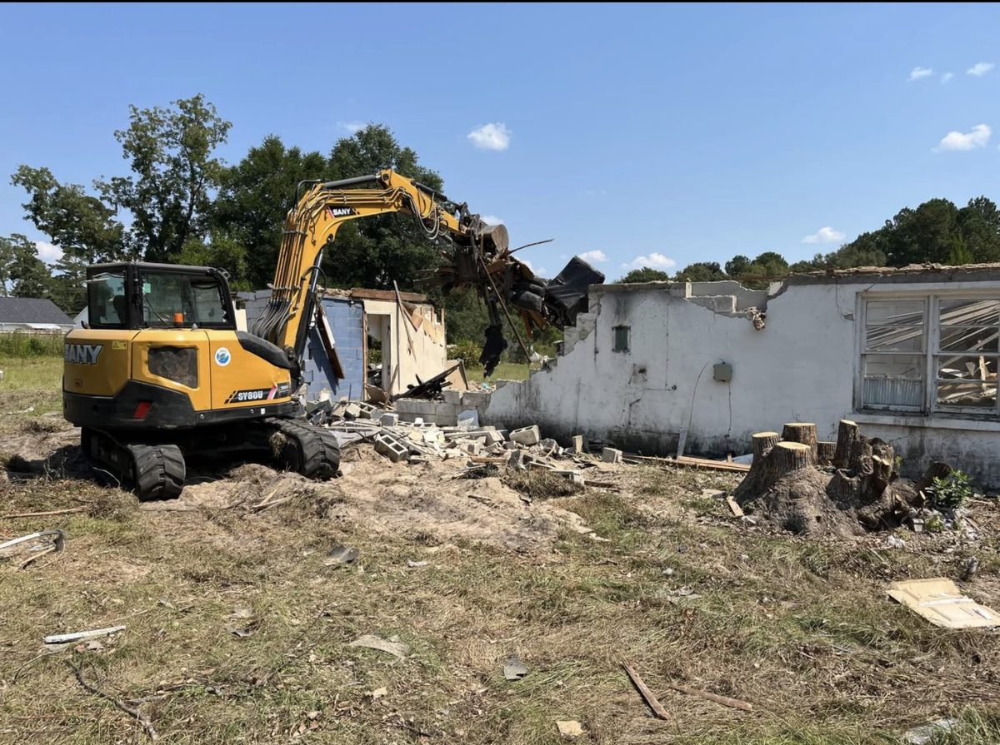

field log —
The Importance of Demolition in Urban Renewal and Site Preparation

Demolition plays a crucial role in shaping the future of our cities and communities. Removing old, unsafe, or unsightly buildings clears the way for new construction, revitalizes neighborhoods, and ensures public safety. Companies like ECS provide quick and affordable demolition services, including site preparation for any new build. This post explores why demolition matters, how it supports urban renewal, and what makes professional demolition essential for successful construction projects.

Why Demolition Is Essential for Urban Renewal
Urban renewal involves transforming aging or deteriorated areas into vibrant, functional spaces. Demolition is often the first step in this process. Here’s why it matters:
Removing Unsafe Structures
Buildings that have become structurally unsound pose risks to residents and passersby. Demolition eliminates these hazards, preventing accidents and injuries.
Clearing Unsightly Buildings
Old or abandoned buildings can drag down the appearance and value of a neighborhood. Removing them improves the visual appeal and encourages investment.
Making Space for New Development
Urban areas have limited space. Demolition frees up land for new housing, commercial buildings, parks, or infrastructure projects that better serve the community.
Supporting Economic Growth
New construction projects create jobs and attract businesses. Demolition enables these projects by preparing the site for development.
For example, a city might demolish a block of outdated warehouses to build a mixed-use complex with apartments, shops, and offices. This change can revitalize the area, increase property values, and improve quality of life.
The Role of Demolition in Site Preparation
Demolition is not just about tearing down buildings. It also involves preparing the site for what comes next. Proper site preparation ensures that new construction can proceed smoothly and safely.
Key steps in site preparation include:
Clearing Debris and Hazardous Materials
After demolition, all rubble, nails, and hazardous substances like asbestos must be removed to create a clean, safe site.
Grading and Leveling the Land
The ground must be even and stable to support new foundations. This may involve filling holes, compacting soil, or reshaping the terrain.
Utility Disconnection and Relocation
Before demolition, utilities such as water, gas, and electricity are safely disconnected. Afterward, new utility lines may be installed or rerouted.
Environmental Considerations
Responsible demolition includes recycling materials when possible and managing waste to minimize environmental impact.
ECS offers comprehensive demolition services that include all these site preparation tasks. Their quick and affordable approach helps clients start new builds without delay.
Benefits of Hiring Professional Demolition Services
Demolition might seem straightforward, but it requires expertise, equipment, and safety measures. Hiring a professional company brings several advantages:
Safety Compliance
Professionals follow strict safety protocols to protect workers and the public. They handle hazardous materials correctly and reduce risks.
Efficient Project Management
Experienced teams plan and execute demolition quickly, minimizing disruption to surrounding areas.
Proper Waste Disposal
Licensed contractors dispose of debris according to regulations, avoiding fines and environmental harm.
Cost Savings
Although demolition has upfront costs, professionals prevent costly mistakes and delays that can arise from DIY or unqualified work.
Site Readiness
A professional service ensures the site is fully prepared for construction, saving time and effort for builders.
For instance, ECS uses modern machinery and skilled operators to complete demolition projects on schedule. Their ability to handle everything from small buildings to large industrial sites makes them a reliable partner for developers.
Common Types of Demolition Projects
Demolition services cover a wide range of projects, including:
Residential Demolition
Removing old houses or apartment buildings to make way for new homes or community spaces.
Commercial Demolition
Clearing retail stores, offices, or warehouses for redevelopment or expansion.
Industrial Demolition
Taking down factories, plants, or storage facilities that are no longer in use.
Selective Demolition
Carefully removing parts of a structure while preserving others, often for renovation projects.
Each type requires different techniques and planning. For example, selective demolition demands precision to avoid damaging the remaining structure, while industrial demolition might involve handling heavy machinery and hazardous materials.
Challenges in Demolition and How to Overcome Them
Demolition projects can face several challenges:
Environmental Hazards
Older buildings may contain asbestos, lead paint, or other harmful substances. Proper testing and removal are critical.
Noise and Dust Control
Demolition generates noise and dust that can affect nearby residents. Using water sprays and sound barriers helps reduce impact.
Permits and Regulations
Local laws often require permits and inspections. Working with knowledgeable contractors ensures compliance.
Unexpected Structural Issues
Hidden weaknesses or underground obstacles can slow progress. Experienced teams adapt plans to handle surprises.
ECS addresses these challenges by conducting thorough site assessments, communicating with clients and authorities, and using best practices to minimize disruption.
How Demolition Supports Sustainable Development
Sustainability is a growing concern in construction. Demolition contributes by:
Recycling Materials
Concrete, metal, wood, and bricks can be salvaged and reused, reducing landfill waste.
Reducing Urban Sprawl
By clearing and rebuilding within existing urban areas, demolition helps limit expansion into greenfields.
Improving Energy Efficiency
New buildings on cleared sites can incorporate modern, energy-saving designs.
For example, a demolition project might recover steel beams for reuse and crush concrete for road base material. These practices lower environmental impact and support circular economy principles.
What to Expect When Planning a Demolition Project
If you are considering demolition, here are some practical steps:
Assess the Site
Identify the building’s condition, materials, and surrounding environment.
Obtain Necessary Permits
Contact local authorities to secure demolition permits and meet regulations.
Hire a Professional Contractor
Choose a company with experience, proper equipment, and good references.
Plan for Waste Management
Decide how debris will be handled, recycled, or disposed of.
Communicate with Neighbors
Inform nearby residents or businesses about the schedule and safety measures.
Prepare for Site Preparation
Coordinate with your builder to ensure the site is ready for construction after demolition.
ECS offers consultation and project management to guide clients through these steps smoothly.
Reproduced from Environmental Construction Services' public blog (environmentalconstructions.com). Part of this private website concept.